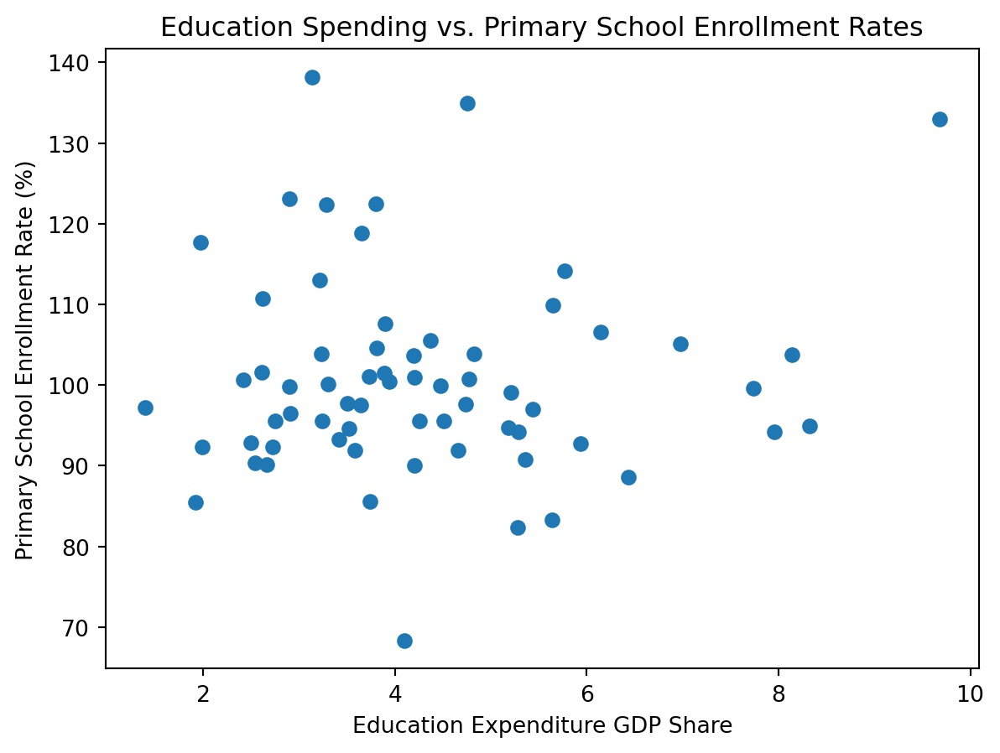

Exploring inflation rate, gdp growth rate, and gdp per capita.
Adult Literacy Rate: The average adult literacy rate for 49 observations in the dataset is 79.57%, with a standard deviation of 19.37%. The smallest inflation rate was 27.28%, and the highest value was 99.99%.
Primary School Enrollment Rate: The average primary school enrollment rate for 114 observations in the dataset is 100.87%, with a standard deviation of 12.04%. The smallest rate was 64.40% and the highest value observed 138.19%.
Education Expenditure GDP Share: The average education expenditure GDP share for 105 observations was 4.22%, with a standard deviation of 2.07%. The smallest amount of 1.02% and 16.58%.
adult_literacy_rate primary_school_enrolment_rate \
count 49.000000 114.000000
mean 79.574801 100.874048
std 19.375539 12.037532
min 27.280001 64.395401
25% 72.400002 94.191751
50% 83.779999 100.022247
75% 95.500000 105.035866
max 99.999977 138.192001
education_expenditure_gdp_share
count 105.000000
mean 4.226215
std 2.069486
min 1.027000
25% 2.898000
50% 3.887000
75% 5.156000
max 16.582462
Visualisations
plt.scatter(wdi["education_expenditure_gdp_share"], wdi["primary_school_enrolment_rate"])plt.xlabel("Education Expenditure GDP Share")plt.ylabel("Primary School Enrollment Rate (%)")plt.title("Education Spending vs. Primary School Enrollment Rates")
Text(0.5, 1.0, 'Education Spending vs. Primary School Enrollment Rates')
(a) Relationship between share of GDP and primary school enrollment (source)

(b)
Figure 1
plt.hist(wdi["adult_literacy_rate"])plt.xlabel("Adult Literacy Rate (%)")plt.ylabel("Frequency")plt.title("Distribution of Adult Literacy Rates")
Text(0.5, 1.0, 'Distribution of Adult Literacy Rates')
(a) Figure 2. Distribution of adult literacy rates (source)